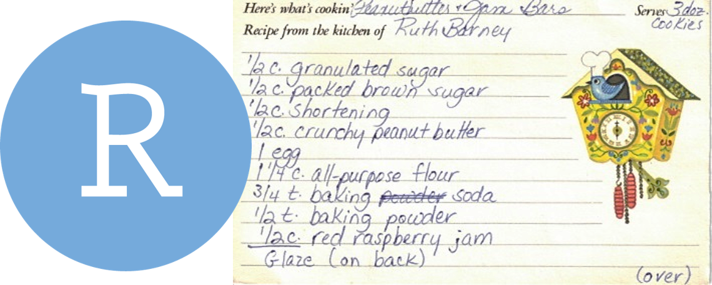

We R growing

R Community
- Around the world
- Help!
- Post questions and help requests on Teams
- R Cheatsheets
- Troubleshooting - See Get Help!
When we use R
- To connect to databases
- To read data from websites
- To document our work and share methods
- When data will have frequent updates
- When we want to improve a process over time
R is for reading

R let’s us do data analysis in a step-by-step fashion, much like creating a recipe for cookies. And just like a recipe, we can start at the top and read our way down to the bottom.
How R is different?
R vs. Excel
- R can handle much larger data sets than Excel.
- R is more flexible than Excel.
- Data processing and analysis are more easily reproducible in R.
- Excel is more widely used.
More comparisons >
R vs. Tableau
- Tableau is primarily a data visualization software. Its data analysis capabilities are limited.
- R Shiny is more flexible than Tableau.
- Tableau’s drag-and-drop interface makes it faster and easier for creating simple visualizations, but is not easily reproducible.
- R is 100% text-based so you can track changes over time.
#VersionControl
R vs. SQL
- SQL is the language of databases.
- SQL queries are sent to a database server and processed there before sending you the data. This may be needed for very large data sets that don’t fit on your computer.
- R can use SQL queries to pull data from databases / data lakes.
- R has the
dbplyrpackage which converts R to an SQL query. - R can read data from almost anywhere (databases, flat files, web pages, etc.)
R vs. Python
- Python is a general-purpose programming language popular for doing internet things. R is more specifically focused on data and statistical analysis.
- R’s Tidyverse is more intuitive and easier to use than
pandas. - You can run Python code in R using the R
reticulatepackage. - Historically Python has been used with GIS software like ArcGIS, but more recently doors have opened for R and spatial analysis with R has been growing.
R vs. SAS
- R is open-source, while SAS requires a license.
- Anyone can create an R package (but packages on CRAN are vetted). New features for SAS are only available when the SAS team makes them available.
Example R project
Here’s an example R analysis project from start to finish using Ozone monitoring data.
EXAMPLE ANALYSIS >
Imagine we just received 3 years worth of ozone monitoring data to summarize. Fun!
Below is an example workflow we might follow in R.
- Create a new project
- Read the data
- Simplify columns
- Plot the data
- Clean the data
- View the data closer
- Summarize the data
- Save the results
- Share with friends
0. Start a new project
We’ll name this project: "2019_Ozone"
1. Read the data
library(readr)
# Read a file from the web
air_data <- read_csv("https://itep-r.netlify.com/data/OZONE_samples_demo.csv")| SITE | Date | OZONE | TEMP_F |
|---|---|---|---|
| 27-137-7001 | 2018-05-01 | 6 | 42.8 |
| 27-137-7001 | 2016-05-29 | 13 | 80.0 |
| 27-137-7001 | 2018-04-05 | 14 | 41.0 |
| 27-137-7554 | 2018-04-10 | 3 | 51.8 |
| 27-137-7554 | 2016-09-29 | 15 | 51.8 |
2. Simplify column names
3. Plot the data
library(ggplot2)
ggplot(air_data, aes(x = temp_f, y = ozone)) +
geom_point(alpha = 0.2) +
geom_smooth(method = "lm")
4. Clean the data
5. View the data closer
ggplot(air_data, aes(x = temp_f, y = ozone)) +
geom_point(alpha = 0.2, size = 3) +
geom_smooth(method = "lm") +
facet_wrap(~site) +
labs(title = "Ozone increases with temperature",
subtitle = "Observations from 2015-2017")
6. Summarize the data
air_data <- air_data %>%
group_by(site, year) %>%
summarize(avg_ozone = mean(ozone) %>% round(2),
avg_temp = mean(temp_f) %>% round(2))| site | year | avg_ozone | avg_temp |
|---|---|---|---|
| 27-137-7001 | 2016 | 11.01 | 60.74 |
| 27-137-7001 | 2017 | 11.26 | 60.66 |
| 27-137-7001 | 2018 | 11.54 | 60.59 |
| 27-137-7554 | 2016 | 12.23 | 61.23 |
| 27-137-7554 | 2017 | 11.81 | 60.98 |
| 27-137-7554 | 2018 | 12.87 | 61.02 |
7. Save the results
Save the data table
Save the site plot to PDF
8. Share with friends

Having an exact record of your analysis is great documentation for yourself and others. It’s also handy when you want to repeat the same analysis on new data. Then you only need to copy the script, update the read data line, and push run to get a whole new set of fancy charts.